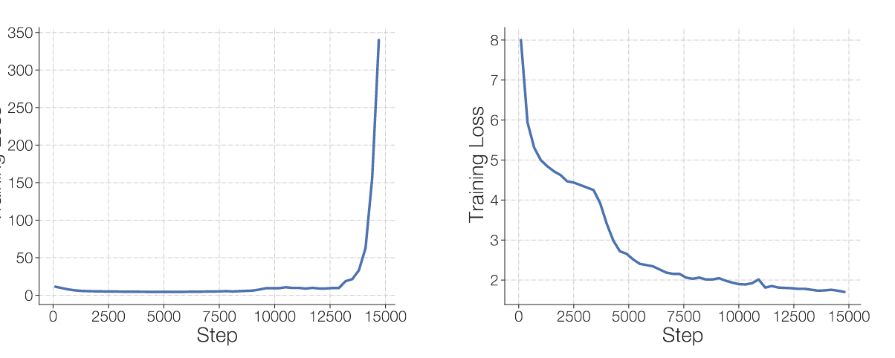
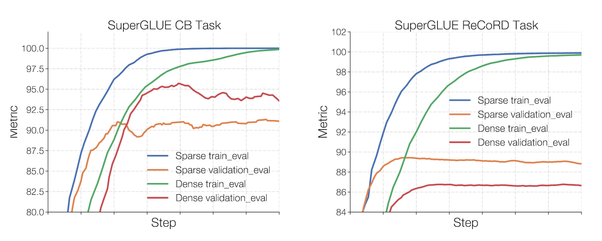
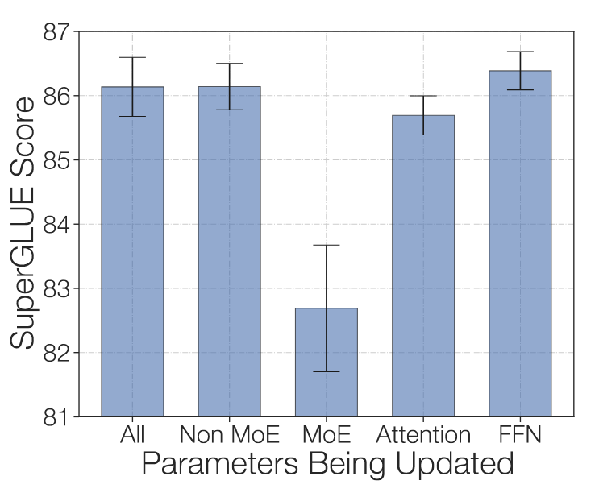

ST-MoE: 高效稀疏专家网络
摘要
上篇回顾了经典论文专家混合网络 MoE，今天读一篇 Google 团队在 22 年 2 月出炉的大作《ST-MoE: Designing Stable and Transferable Sparse Expert Models》，旨在解决训练过程中的不稳定性以及微调过程中的质量不确定性。论文提出的 269B 的稀疏模型，计算成本与 32B 的密集模型相当。稀疏模型第一次在迁移学习中实现了 SOTA。
值得一提的是，谷歌的大牛 Jeff Dean 也是该论文的作者之一。
简介
稀疏专家网络，根据输入激活网络的不同子部分，可以更高效地增加模型容量，可参考 MoE：通过条件计算增加模型容量 | 一隅 (tqnwhz.github.io)。简单来说，稀疏专家网络为每个 token 动态地选择模型参数，同时保证其 FLOPs 基本恒定（例如选择固定的专家数目），这允许网络极大地扩展参数数量。相较于同规模的静态网络，稀疏专家网络可有 4-7 倍的预训练加速，训练成本减少了一个数量级。性能上，该方法产生了 SOTA 的翻译模型，使用 GPT-3 1/3 的训练成本达到了同等级的单样本学习性能。
然而，问题依然存在。研究人员发现使用预训练的专家网络在常见基准上微调时，其性能逊于较小的模型，例如 SuperGLUE。也就是说，其迁移学习能力较差。Switch-XXL，一个参数更少但计算量大 8 倍（FLOPs 大约等于最大的 T5 模型）的模型，提高了自然语言理解任务的质量。然而，有研究指出，预训练中的不稳定性可能妨碍了必要的预训练，例如参数和计算的必要平衡。如何可靠地训练专家网络还是个悬而未决的问题。
本文的贡献总结如下：
- 对稳定性 - 质量权衡进行了大规模研究
- 引入路由 z-loss，解决了不稳定问题，并略微提升了质量
- 稀疏和密集模型的微调分析，分析其对批量大小和学习率等超参数的敏感性。糟糕的超参数实际上不会导致密集模型的微调增益，尽管有很大的预训练速度提升。
- 在分布式设置中设计帕累托高效稀疏模型的架构、路由和模型设计原则。
- 跨专家层跟踪 token 路由决策的定性分析。
- 一个 269B 稀疏模型（Stable Transferable Mixture-of-Experts 或 ST-MoE-32B），它在各种自然语言基准测试中实现了最先进的性能。
训练稳定性研究
训练的稳定性，定义为训练 loss 的发散程度。下图为两个同规模 FLOPs 的稀疏模型的 loss 变化。左侧为不稳定训练，右侧为稳定训练的例子。

虽然可以使用一些简单的方法提升稳定性，例如更严格的梯度裁剪、任意小的学习率，但是这往往会损害模型质量。论文将提高稳定性的方法分为以下几类进行研究：
- 消除乘法交互
- 引入模型噪声
- 限制激活和梯度
构建这项研究的主要问题是小型模型很少不稳定，但大型不稳定模型成本太高而无法运行足够的步骤和种子。与 T5-XL 匹配的稀疏模型 FLOP 是很好的研究对象，因为它在大约 1/3 的运行中不稳定，但训练成本相对低廉。论文使用 6 个随机种子，每个模型都使用掩码语言建模目标在 mC4 上进行了 20k 步的预训练。
移除乘法交互
论文展示并分析 Transformers 中两个乘法交互实例的影响。
GELU 门控线性单元 (GEGLU)：一种激活函数，公式如下： \[ FFN_{GEGLU}(x,W,V,b,c)=GELU(xW+b)\odot(xV+c) \] 均方根尺度（Root Mean Square Scale）参数。RMS 归一化中的均方根尺度参数。RMS 归一化公式如下： \[ y_i=\frac{x_i}{\sqrt{\frac1d \sum_{i=1}^d x_i^2}}\cdot g_i \] 结果如下所示。移除 GEGLU 层或 RMS 尺度参数都提高了稳定性，但对模型质量造成了重大损失。这些尺度参数 (g) 对模型质量与其他地方的参数（例如 FFN）相比具有不成比例的增益。 Shleifer 等人 (2021) 发现在 Transformers 的残差连接中添加一个学习的乘法标量会使它们更加不稳定。
添加噪声
一般认为，在模型中添加噪声可以提高训练稳定性（Neelakantan et al., 2015）。而且通过 dropout 注入噪声的微调很少出现不稳定的情况，论文研究了噪声是否可以提高稀疏模型的稳定性。
结果如下表所示，可以看到，稳定性的提升依然是以质量为代价的。
约束激活和梯度
稳定神经网络最成功的方法之一是对激活和梯度的约束。一种流行的方法是通过反向传播时裁剪梯度以避免梯度爆炸。接着是激活的约束，论文认为，路由器（也就是 MoE 里的门控网络），以 float32 精度计算专家的概率分布。这在更大的模型规模上不足以产生可靠的训练。为了解决这个问题， 论文引入了路由 z-loss，公式如下： \[ L_z(x)=\frac 1 B \sum_{i=1}^B(log \sum_{j=1}^N e^{x_j^{(i)}})^2 \] 其中，\(B\) 是 batch 中 token 数量，\(N\) 是专家的数量，\(x\in\mathcal R^{ B\times N}\) 是路由器接收的 logits。该 loss 惩罚了门控网络中的大的 logits，类似 l2 正则项。
结果如下表所示，严格的梯度裁剪会损害性能，而路由 z-loss 则不会。论文中使用的 z-loss 的权重为 0.001。
微调
过拟合假设
论文认为，稀疏模型微调效果差的原因是其倾向于过拟合。论文在 SuperGLUE 中的两个任务进行了实验。下图为 Dense L 和 ST-MoE-L 模型的微调结果。每个模型都在来自 C4 语料库的 500B 个 token 上进行了预训练。可以看出，稀疏模型更快地收敛到 100% 的训练集精度，证实稀疏模型在数据分布变化时可以高效地适应优化。在更大的任务 ReCORD 上，稀疏模型的验证质量随着训练的提升而显着超过密集模型。然而，在较小的任务 CB 上，稀疏模型在保留数据上落后于密集模型。

基于此，适度的 dropout 可以提升稀疏模型的泛化性能，实验结果如下图所示。
微调参数子集
为了防止过拟合，论文在微调期间尝试仅更新模型参数的子集：
- 所有参数 (All)
- 仅非 MoE 参数 (Non MoE)
- 仅 MoE 参数 (MoE)
- 仅 self-attention 和 enc-dec attention 参数 (Attention)
- 仅非 MoE FFN 参数 (FFN)
结果如下图所示，其中 3 个结果大致相同，而仅微调 MoE 参数会导致质量急剧下降。更新非 MoE 参数的效果、更新所有参数、仅更新 FFN 参数的效果差不多。只有更新非 MoE 参数才能成为加速和减少微调内存的有效方法。

超参数
论文研究两个超参数：批大小 和学习率对稀疏模型和密集模型微调的影响。在 C4 的 500B 个 token 上预训练 Dense-L 和 ST-MoE-L，然后在 SuperGLUE 上进行微调。结果如下图所示。
在所有超参数设置中，稀疏模型（橙色）的性能优于密集模型（蓝色）—— 然而，每个模型的最佳设置都可以显着改变结果。稀疏模型和密集模型在不同的批量大小和学习率下具有截然不同的性能。稀疏模型受益于更小的批量大小和更高的学习率。论文指出了在微调过程中正确调整批量大小和学习率的重要性。简单地使用适用于密集模型的相同微调超参数可以掩盖稀疏模型获得的任何预训练改进。换而言之，不能直接将密集模型的超参数照搬到稀疏模型微调上。
丢弃 token 的健壮性
稀疏模型将 token 路由给每一层的一个或多个专家。为了使这些模型在现代硬件的 SPMD 范式中高效，专家容量（每个专家处理的 token 数量）需要提前固定。当专家收到的 token 超过其容量时，多余的 token 将被丢弃。论文使用辅助损失进行预训练，尽量向每个专家发送等量的 token 和容量因子（Capacity Factor）。专家的容量为 \(CF\cdot tokens/experts\)，其中 CF 是容量因子，tokens 为一个 batch 是 token 总数。显然，理想的负载均衡情况下，CF 为 1 即可，不会有丢弃 token 现象。然而，由于很难做到如此理想的负载均衡，CF 为 1 时不可避免的会有丢失 token 现象出现，增大 CF 可缓解该现象。
下表展示了辅助 loss、token 丢弃率对性能的影响。出人意料的是，微调质量不会因为 10% 的 token 丢弃率受到实质性能影响。这与 Yang et al. (2021) 的结论一致，即负载不平衡可能不会显着影响模型质量。
插入哨兵标记
结果如下图所示。不能提高泛化能力，但哨兵标记可以加速训练收敛。
设计指南
如何设计一个稀疏模型？专家数量、路由算法、容量系数如何决定？如何根据硬件调整？论文对此给出了建议。
- 专家数量：建议每个 GPU 核心配备一名专家或更少，避免同核心专家数过多导致增多内存传输，降低效率。
- 容量因子和路由策略（Top-n）：越大性能越好，但计算、通信成本都会增加。论文中平衡训练速度和性能，选择 1.25 的 CF。
详细的结果可以参考论文原文。
实验结果
论文设计了一个 T5-Large 近似 FLOP 的 269B 的稀疏模型，在多个 NLP 任务中实现了 SOTA，包括情感分析（SST-2）、语义消歧（WIC）、句子相似度（MRPC、STS-B、QQP）等。
实验结果如下表所示，大部分都是 SOTA。值得注意的是，为简单起见，论文是在所有任务上联合微调的，而非单独微调。如果是单独微调效果可能会更好。
总结
本文针对稀疏专家网络训练的稳定性、质量等问题，做了多因素的定量实验，为相关实践提供了一份指南。